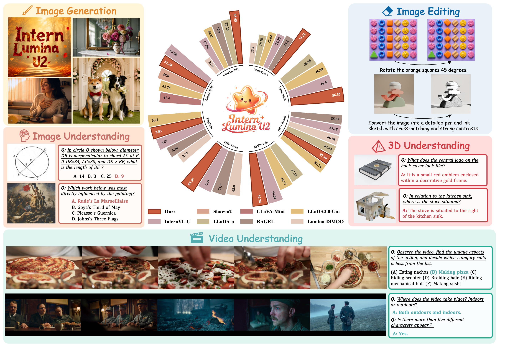
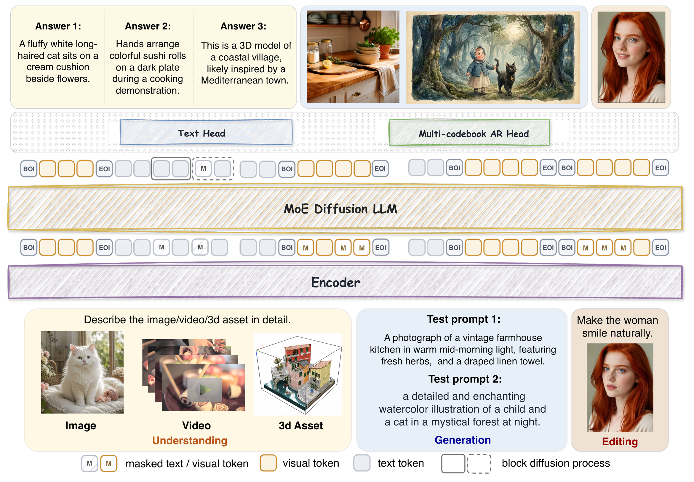
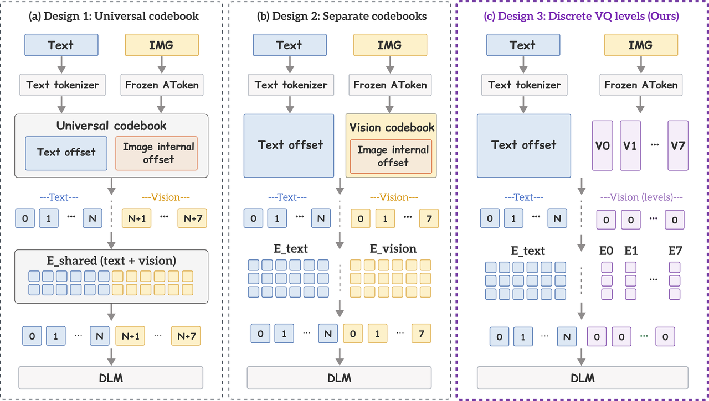
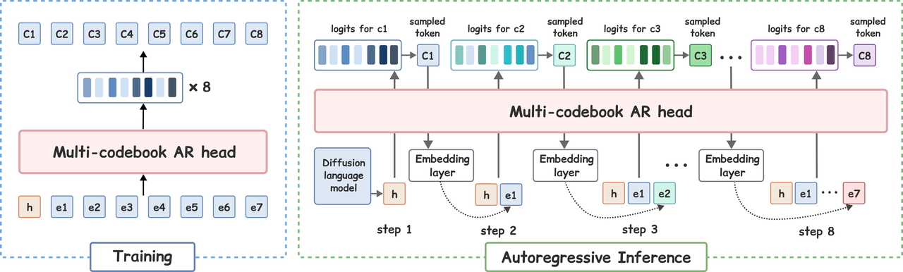

Intern Lumina U2
A Multi-Codebook Diffusion Large Language Model for Omni-Visual Understanding and Image Generation
Intern Lumina U2 unifies language, images, video, and 3D for text question answering, image understanding and editing, image generation, video understanding, and 3D understanding.

Experimental Results
| Task family | Benchmark | InternVL-U | LLaDA2.0-Uni | LLaDA-o | Intern Lumina U2 |
|---|---|---|---|---|---|
| Visual reasoning & perception | |||||
| Document & chart | ChartQA ↑ | 76.60 | 80.10 | 87.90 | 86.52 |
| Document & chart | CharXiv-DQ ↑ | 53.30 | 68.40 | 69.80 | 83.65 |
| Perception | HallusionBench ↑ | 44.80 | 50.20 | 47.40 | 62.15 |
| Knowledge | MMMU-Pro ↑ | 20.80 | 34.00 | 28.30 | 36.13 |
| Math reasoning | MathVision ↑ | 22.10 | 26.70 | 15.70 | 33.22 |
| Math reasoning | DynaMath ↑ | 46.97 | 46.89 | 40.58 | 56.37 |
| Temporal understanding | |||||
| Video | Video-MME ↑ | 53.00 | 43.76 | 44.90 | 51.26 |
| Video | MVBench ↑ | 59.61 | 48.97 | 47.16 | 59.74 |
| Video | MLVU ↑ | 57.27 | 45.81 | 48.62 | 57.03 |
| Generation & editing | |||||
| Image generation | GenEval ↑ | 0.85 | 0.89 | 0.86 | 0.81 |
| Image generation | DPG ↑ | 85.18 | 87.76 | 87.04 | 87.10 |
| Image generation | TIIF Short / Long ↑ | 74.90 / 73.90 | — | — | 84.60 / 85.95 |
| Image editing | ImgEdit ↑ | 3.67 | 3.92 | — | 3.8307 |
Method.
A unified architecture
for omni-visual tasks.

Discrete VQ levels for visual tokens.

Parallel positions, sequential codebooks.

Demo Examples.
Text-to-Image Generation
✦
Image editing
✦
Image understanding
✦
3D understanding
✦
Video understanding
Resources